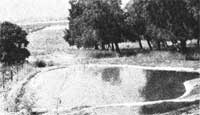
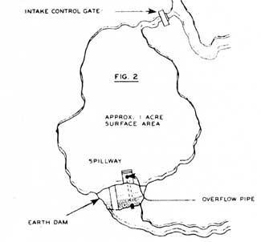
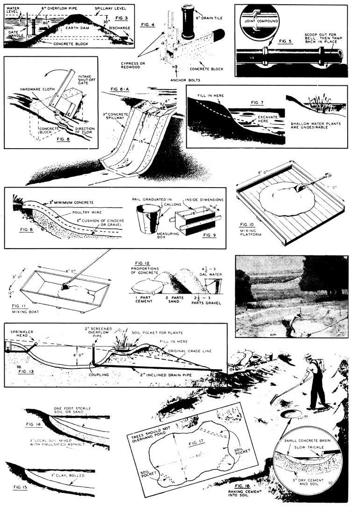

Reprinted with permission from Mechanix Illustrated, April 1945, copyright © Fawcett Publications Inc.
Once again, we're pleased to roll the clock back as much as 30 years or more in order to reprint two more articles by author Hi Sibley.
Hi, in case you've never heard of his work, was living a MOTHER-type life of do-it-yourself adobe houses, organic gardening, homestead bees, and like that away back at the end of World War II. And not only living it ... but writing about it in a great number of magazines. Unfortunately for us all, more folks back there in the late 40's were interested in big cars, city jobs, and new homes in the suburbs ... than were interested in Hi's subjects.
Now that so many of us are rediscovering Mr. Sibley's way of life, though, we think it's only fair to honor the man who was 30 years ahead of his time by again publishing some of his down-to-earth gems one more once ... this time, on the subject of homestead ponds. "You Can Catch 'Em At Home" originally appeared in the April 1945 Mechanix illustrated (Copyright 1945 by Fawcett Publications, Inc.) and "I Fish In My Back Yard" was first published in the March 1961 issue of Popular Science (Copyright 1961 by Times Mirror Magazines, Inc.). Both articles are reprinted here by permission.
You like to fish? All right, bring your tackle out to my back yard-you'll get your limit of large-or smallmouth black bass, bluegills, and bream before lunch time.
Actually this is being done in thousands of artificial ponds in the southeast section of the country, and if not exactly in back yards, in what were former gardens, pasture, etc. With over six years of experience in this extremely interesting work the Alabama Experiment Station has proved that, under proper conditions, more meat can be produced per acre in the form of fish than in beef cattle-in fact, up to 600 lbs. The secret appears to be in stocking the right kinds of fish in the correct proportions, and then fertilizing, not the soil in the bottom of the pond, but the water itself. The belief among anglers that fish thrive best among the spatterdocks, cattails, and water lilies has been proved wrong; these "water weeds" as the fish-pond owners call them, are undesirable, providing very little food and assimilating too much of the nutrition of the fertilizer applied which should properly feed the algae and microscopical floating plants upon which insects, tadpoles, crawfish, and other small animals subsist and in turn provide food for the bass, bluegills, etc.
It has generally been assumed that clear water produces the healthiest fish, but this is not so if the minute vegetable growth upon which life is sustained is absent. The writer was rather proud of the clearness of his two-month-old pond until he learned the facts of fish life. An application of commercial fertilizer turned the water to a murky green in three days, and we could almost see the small gambusia (mosquito fish) multiply by the thousands. Incidentally, these fish, which average about two inches long in the adults, not only keep down mosquito larvae, but provide good eating for the larger game fish, such as bass. They are practically a "must" in the home fish pond.
Recommended commercial fertilizer is 100 lbs. of 6-8-4 (NPK) mixed, plus an additional 10 lbs. of nitrate of soda for each surface acre of water. It is broadcast by hand from shore, and wave action carries it to the center which cannot be reached in broadcasting. Roughly, applications should be about once a month, or when the water begins to clear.
The proportions of various kinds of fish which have been found to produce best results are 100 largemouth bass and 1,500 bream per surface acre of water. It is important to stock at this ratio, as if too many fish are stocked there will not be sufficient food for each to reach pan size, and understocking with bass also results in poor fishing due to eventual overpopulation of bream too large to be taken easily by the young bass but not large enough for the frying pan. The bass then fail to reproduce because the thousands of starved bream eat the bass eggs. The old bass won't bite because of the unlimited supply of small bream on which to feed. All of which proves the old saying, "Ain't Nature wonderful!"
The initial stock of fish may be obtained from federal hatcheries or, in some cases, from state hatcheries, or private concerns. The writer obtained some of his stock of bluegills and a few bass, none over two inches, with a dip net in landlocked pools and in a drying river bottom. Included were a few catfish, not detrimental to the others, and quite a large number of tadpoles and crawfish, which will serve as food for the bass.
In the country-where the land for a pond is usually available close to natural water supply-a one-acre surface area is desirable. And, when the impoundment is fed by a creek or copious spring, there is no expense for the water, and an artificial bottom is not required since seepage and evaporation are easily taken care of. The most desirable site is in a small valley with rather steep sides and gradually sloping floor (Fig. 1). The steep sides make it possible to control water plants which would be much more rank in shallow water, and it is important to keep them down. The location should be such, however, that runoff water from higher areas would not carry in too much silt. For this reason, a dammed-up creek bed is not satisfactory because in the heavy rains it would not only carry off fertilized water but bring in a great deal of infertile water, as well as muddy the pond, a condition unfavorable to fish production. A site at one side of a creek, as in Fig. 2, where a sufficient amount of water could be diverted and controlled, is satisfactory. The basin can be excavated with tractor and scraper; all stumps and other matter likely to decay under water should be removed. The basin should be 71 to 81 deep, with a permanent water level of not less than 6' at the deepest point. This should be at the lower end where an earth dam is built, so that a tile drain can be laid, as in Fig. 3. This consists of six-inch pipe. Inlet and outlet gates are made as in Figs. 4 and 6. Lay pipe as in Fig. 5. The spillway may be simply a 3"-thick concrete channel laid on the dam 611 below the top of it as in Fig. 6-A. Incidentally, the dam slope should not be greater than 30 degrees. A horizontal spillway should be used only for very rainy locations.
As stated before, water plants are undesirable in a large pond with dirt bottom because they soon grow out of control, and can be kept down more easily with steep sides than with gradually sloping ones. In Fig. 7 is shown how to gain this advantage by excavating and filling in.
The best construction-and most expensive-is to lay a 6" "cushion" of cin ders or gravel in the excavation to absorb heaving of the ground through frost, earthquake, etc., and pour 611 of concrete over this, with chicken wire embedded as reinforcement. Three inches should be sufficient where there are no geological hazards", Fig. 8.
To get the rim or parapet level, start at one point and lay a straight board 6' or 8' long on the top of the embankment, true it with a spirit level, and proceed on around from there.
The mixing can be done easily as in Fig. 10, or in Fig. 11. Proportions of the ingredients are illustrated in Fig. 12. Most important for strong, durable concrete is the amount of water used. First mix one part portland cement with 2 parts clean, sharp sand, 2-1/2 to 3 parts clean gravel. Mix dry, until the color is uniform, with no gray or brown streaks. Then add water (4-1/2 gals. if sand is moist, 5 gals. if dry), and mix until sand and pebbles are thoroughly coated with cement paste. The concrete should be placed within 30 minutes. A gravy-consistency cement coating later completes it.
Fig. 13 gives a sectional view of another proper pond of concrete but not drawn to scale. The sprinkler-head aerates the water.
If you have adequate machinery for mixing and consolidating and the soil is satisfactory, then you could place a 3" stabilized subsoil with emulsified asphalt ("Bitumuls" by Standard Oil), Fig. 14.
In Fig. 15 a 3" layer of common clay, rolled down, also makes a good pond bottom. Portland cement raked into dry soil and wet down, also works out well as in Fig. 16.
The two easiest ways to obtain fish for your small pond are by [1] asking Uncle Sam for assistance, and/or [2] getting in touch with a nearby fish hatchery (preferably one that delivers).
The U.S. Fish & Wildlife Service administers a program to help private pond-owners stock their ponds. (This program is open, however, only to folks who aren't in the business of charging others for the privilege of fis hing in their mini-lakes.) Application must be made through the U.S. Soil Conservation Service. You can get in touch with the Service at the nearest Federal Office Building (check the White Pages under "U.S. Government") ... or you can write to the Soil Conservation Service, Independence Ave. S.W., Washington, D.C. 20250.
To find the nearest commercial fish hatchery, all you have to do is look in the Yellow Pages under "Fish Hatcheries", or contact the Wildlife Commission at your state's capital. (Every state wildlife agency keeps a list of the hatcheries in its jurisdiction.) Alsoif you can-get hold of a copy of The Commercial Fish Farmer ... you'll find plenty of advertisements for hatcheries in this journal. (A sample copy can be had for $2.50?or a year's subscription for $10?from The Commercial Fish Farmer, P.O. Box 2451, Little Rock, Ark. 72203.)
If all else fails, you might want to write to Edward McLeary, c/o The Trout Lodge, Inc., 4008 Pioneer Way East, Tacoma, Wash. 98443 (and enclose $1.00 for a brochure). Ed will ship trout-and/or trout eggs-to any major airport in the U.S.-The Editors.
|
 |
|
 |
|
 |
|
|